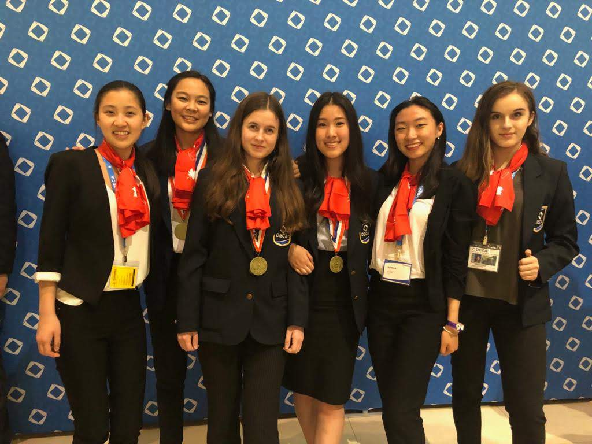
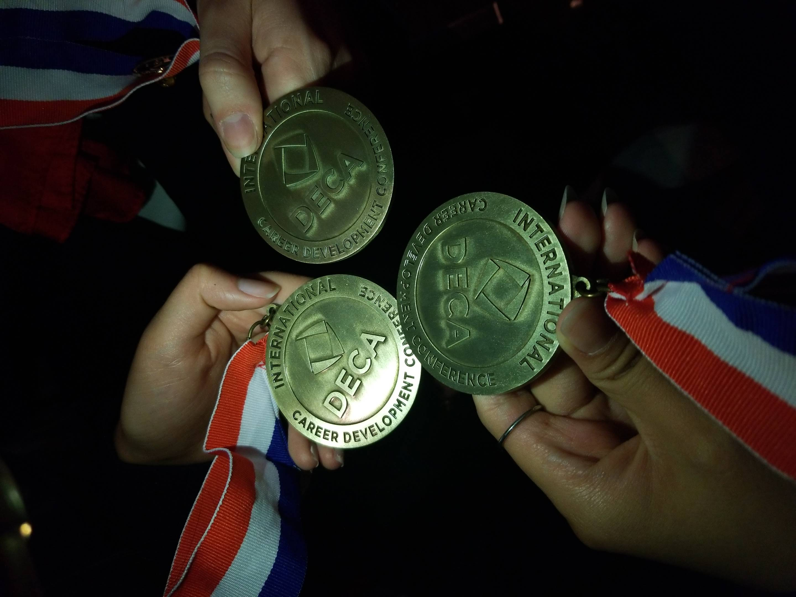
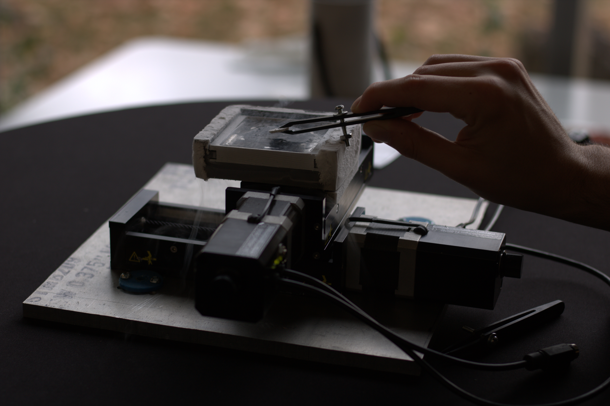
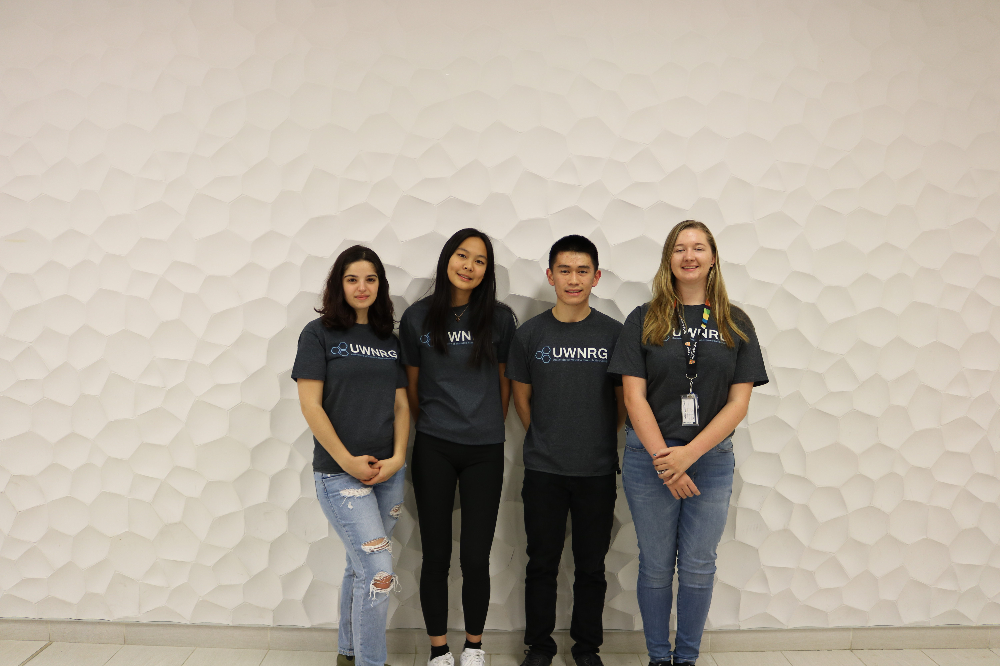
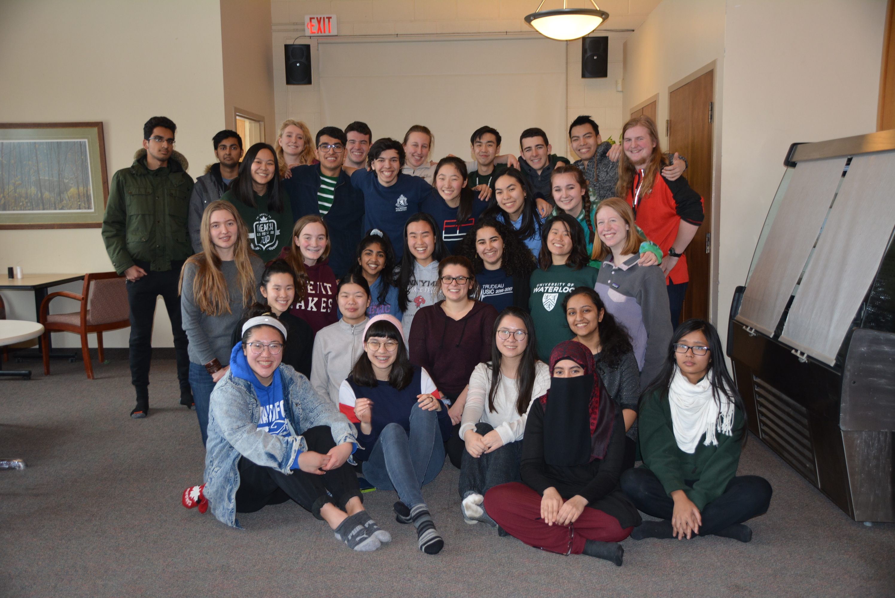
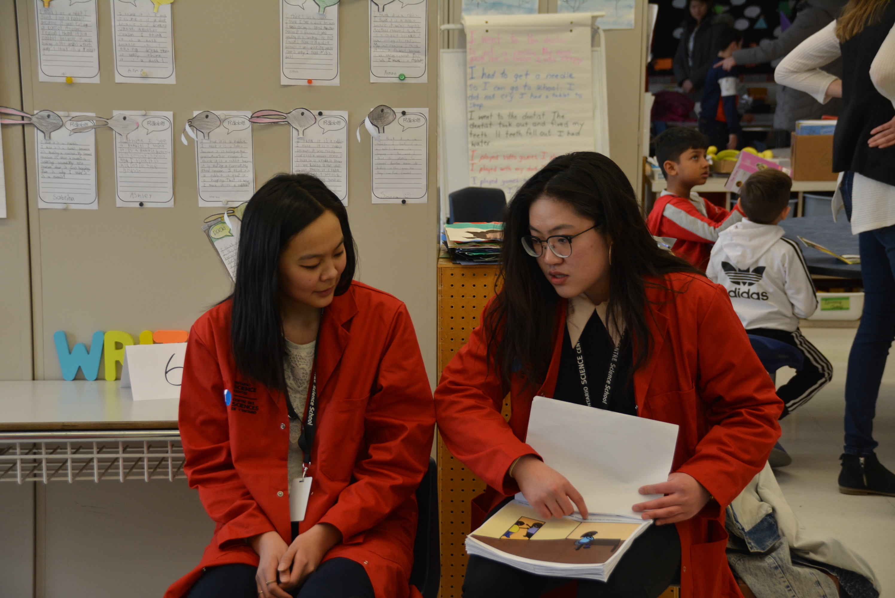

Throughout my high school and university career, I have had many amazing opportunities to explore my interests. Some things I enjoy working on are business projects, science and healthcare, and technology and software.

I had the incredible opportunity to attend DECA ICDC 2019 to represent Ontario and my high school, Thornhill SS. This was one of my favourite experiences in high school because I was able to travel with my friends, compete against people internationally, and experience Florida, Orlando.

I am proud to say my team achieved top 10 in our event integrated marketing campaign. During this time, our teamwork and initiative was pushed and challenged because of the high intensity and small time frame, but we pushed through and was able to achieve something amazing!

I am a business and marketing lead for University of Waterloo’s Nanorobotics Group. We are a student design team that is working to solve modern day problems with nanorobotic solutions, for example drug delivery systems or electromechanical applications. As a business and marketing member, I assist with allocating funds to our subteams, planning socials to ensure the teams stay motivated and managing our website. Check our our website!

It has definitely made my university experience much more engaging, being able to meet people from other programs and faculties. I have also had many incredible opportunities such as attending the Nanotechnology Conference. I especially enjoy the wide range of activities that NRG offers; I am able to learn about concepts such as superconductors to plasmids all in one student design team. I am currently working on creating and writing blogs about superconductors!

For one semester in high school, I attended the Ontario Science Centre Science School. This unique experience allowed me to integrate and emphasize science in this semester of school. For example. we were able to work as hosts for the science centre, offering guidance to visitors and helping to run workshops for youth. We had the opportunity to participate in DNA labs and learn in a unique workspace.

One of my favourite experiences was making stories and reading it to the local public school Grenoble. We had to create a story about a variety of science topics and present it to the students of Grenoble. Having an opportunity to make an impact on the community by encouraging them to find interests in science has given me a passion for working with youth.